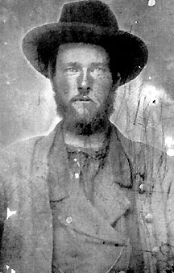

|

NAME: John McClure
BORN: 1838
DIED: 1915
ALLEGIANCE: Confederate
HIGHEST RANK: Private
UNIT: Franklin Guards; 25th Virginia Infantry, Company F;
62nd Virginia Mounted Infantry, Company F
RECORD: Joined the 25th Virginia Infantry
in May 1861 as a member of the Franklin Guards. Captured at
Rich Mountain, Virginia, July 1861. Paroled and exchanged in
1862. Transferred to the 62nd Virginia Infantry in January
1863. The unit disbanded in April 1865.
|
|
John McClure wore a uniform of Union blue even before the
Civil War broke out. Back in 1859, he had joined the
Franklin Guards, a militia unit from western Virginia's
strongly pro-union Pendleton County. It was only natural
that he would follow his unit directly into active service.
But in a turn of events that mirrored the deeply divided
sentiments of western Virginians, in May 1861 McClure and
the blue-clad Franklin Guards joined not the Union army, but
the Confederate one.
As Company F of the 25th Virginia Infantry, McClure and his
comrades fought to keep Union forces from Ohio out of
northwestern Virginia. The Pendleton County men's career was
a short one, however. At the Battle of Rich Mountain on July
11, most of the 25th Virginia--including McClure--was
captured.
Paroled and exchanged a year later, McClure and the
remainder of Company F were transferred to the 62nd Virginia
Infantry in January 1863. McClure participated in the
Jones-Imboden Raid in western Virginia in April 1863 and the
Gettysburg Campaign into Pennsylvania a few months later.
After the Battle of Gettysburg, McClure's unit played a
significant role in protecting the Confederate wagon train
when it was attacked near Williamsport, Maryland.
In late 1863, the 62nd Virginia became a mounted infantry
regiment, and McClure learned to fight on horseback. McClure
was on hand when the 62nd took part in hard fought battles
at New Market and Cold Harbor, Virginia, in May and June
1864. Following Major General Jubal A. Early's defense of
Lynchburg in June 1864 (in which his brother Billy was
killed), McClure and the 62nd joined in Early's march on
Washington, D.C., then fought in battles at Monocacy,
Maryland, in July, and Winchester, Fisher's Hill, and Cedar
Creek, Virginia, in the fall of 1864. Afterwards, the
regiment served on outpost duty in Virginia's Page Valley.
Home on furlough when news of the Confederate surrender came
in April 1865, McClure and some of his fellow infantrymen
decided to report to a detachment of their regiment
stationed in an adjoining county. Chancing upon some apple
brandy on the way, the soldiers presented themselves to the
captain in a less than flattering condition. The captain
told them to go home.
McClure returned to Pendleton County, which had become part
of the new state of West Virginia. He opened a small store,
married the girl next door, and began acquiring land and
raising cattle. Although childless, he and his wife raised
and educated a niece and nephew. He became a pillar of the
Presbyterian Church and brought electric lighting to the
town of Franklin. At the time of his death in 1915,
"Colonel" McClure was known as the "Cattle King of West
Virginia."
Source: Civil War Times Illustrated
40:5 (October 2001), 88.
|